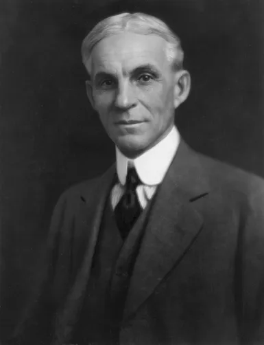

BIOGRAFIAS
A través de estas seis biografías, exploramos la vida de hombres que, más allá de acumular una riqueza incalculable, redefinieron las reglas del juego en sus respectivas épocas. Desde la revolución industrial hasta la era de la inteligencia artificial, estos personajes no solo fueron pioneros en los negocios, sino arquitectos del mundo moderno en el que vivimos hoy.
John D. Rockefeller
Nacimiento: 1839, Nueva York.
Familia: William Rockefeller y Eliza Davison.
Influencia: Fundador de Standard Oil, llegó a controlar el 90% del refinado de petróleo en EE. UU. Fue una figura clave en la industrialización moderna y definió las prácticas del capitalismo a gran escala..
Leer más
Andrew Carnegie
Nacimiento: 1835, Escocia.
Familia: William Carnegie y Margaret Morrison.
Influencia: Magnate del acero que revolucionó la producción industrial, permitiendo la construcción de las ciudades modernas. Dedicó gran parte de su inmensa fortuna a crear una red global de bibliotecas y centros educativos.
Leer más
Henry Ford
Nacimiento: 1863, Michigan.
Familia: William Ford y Mary Litogot.
Influencia: Revolucionó la industria automotriz al introducir la línea de ensamblaje móvil. Su enfoque en la producción en masa hizo que los automóviles fueran accesibles para la clase media, cambiando para siempre el transporte y el diseño de las ciudades.
Leer másJeff Bezos
Nacimiento: 1964, Nuevo México.
Familia: Jacklyn Gise y Ted Jorgensen.
Influencia: Fundador de Amazon, transformó el comercio global a través del e-commerce y la computación en la nube. Su impacto reside en haber cambiado drásticamente los hábitos de consumo de la sociedad moderna y la logística a nivel mundial.
Leer másBill Gates
Nacimiento: 1955, Seattle.
Familia: William H. Gates II y Mary Maxwell.
Influencia: Cofundador de Microsoft, fue el principal impulsor de la revolución informática personal. Su influencia radica en la democratización del acceso a la computación, lo cual se convirtió en la base de la economía digital en la que vivimos hoy.
Leer más
Elon Musk
Nacimiento: 1971, Sudáfrica.
Familia: Errol Musk y Maye Musk.
Influencia: Fundador de empresas como SpaceX, Tesla y Neuralink, ha redefinido sectores como la exploración espacial, la energía sostenible y la inteligencia artificial. Su influencia radica en su visión de acelerar la transición energética mundial y su objetivo de convertir a la humanidad en una especie multiplanetaria, cambiando las reglas de la innovación tecnológica actual.
Leer másConclusión: El hilo conductor del éxito
Al analizar estas trayectorias, descubrimos que estos seis personajes comparten una "Mente Millonaria" basada en tres pilares fundamentales:
- Visión a largo plazo: Ninguno se conformó con los límites de su época; vieron oportunidades donde otros solo encontraban obstáculos.
- Capacidad de ejecución: Comprendieron que una idea sin acción es solo un sueño. Construyeron sistemas que transformaron la economía global.
- Adaptabilidad radical: Supieron pivotar y evolucionar ante cualquier cambio tecnológico o crisis social.
La verdadera riqueza de estos personajes no reside solo en su legado financiero, sino en cómo su curiosidad y disciplina alteraron permanentemente nuestra forma de vivir. El éxito fue el resultado inevitable de su incesante búsqueda de innovación.